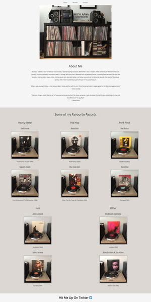
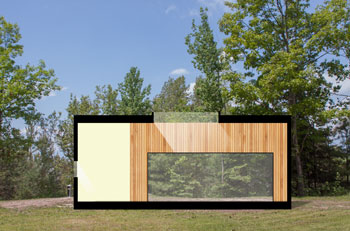
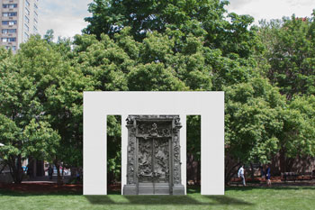

Projects
Web
My Record Collection
This is a site that I made to give a brief overview of my record collection. This site was made for the assigned pre-course work for the HackerYou bootcamp.
The purpose of this site is to roughly categorize my collection based on genre and then single out a few of my favourite records.
The website's header has a navbar that allows the user to quickly get to the section they want.
The top section of the website features a photo of my record collection, a bit of info about me, and two quotes that summarize my love of vinyl.
The main section of the page shows a division of five genres (heavy metal, hip hop, punk rock, jazz, other) and pictures of two of my favourite records within each genre.
Beneath each picture is the title of the record. These act as links to the respective record's page on Discogs. Discogs is the Internet's largest record database.
The footer invites the user to get in touch with me on Twitter.
Architecture
Guest Cottage
Section Drawing
A section drawing of a guest cottage I designed.
The purpose of this drawing is to show the relationship between different parts of the structure.
Floor Plan
This is a detailed floor plan of the guest cottage. All furniture, appliances, and flooring is shown.
Exploded Paraline Drawing
The exploded paraline drawing is meant to enhance a normal isometric projection.
In an isometric projection, some of the components may be hidden from sight. The exploded paraline drawing shows all components of a structure and how it all fits together.
Sculpture Gallery
Front Elevation
I designed a sculpture gallery to display Rodin's The Gates of Hell in the Ryerson Quad.
The sculpture itself is located on the north side of the gallery. Large open doorways leading in and out of the gallery are located on the east, west, and south sides.